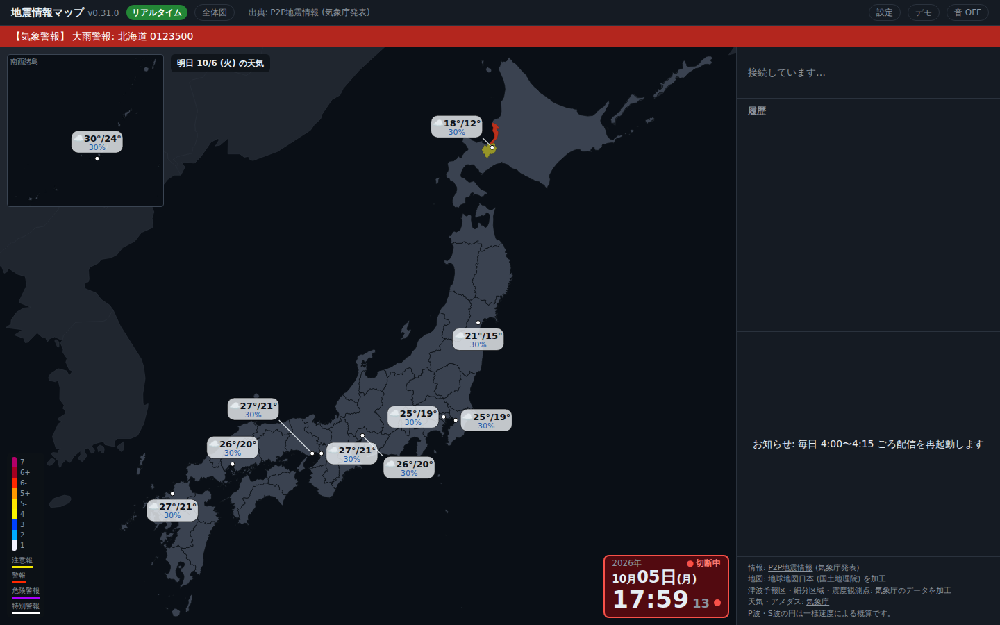
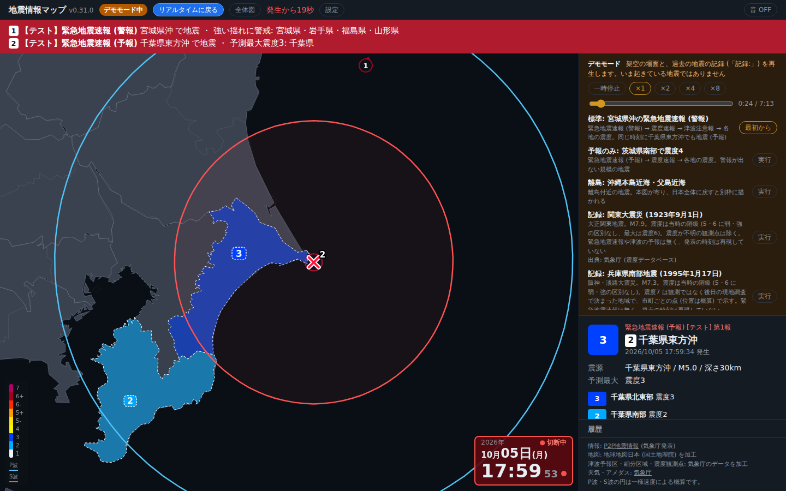
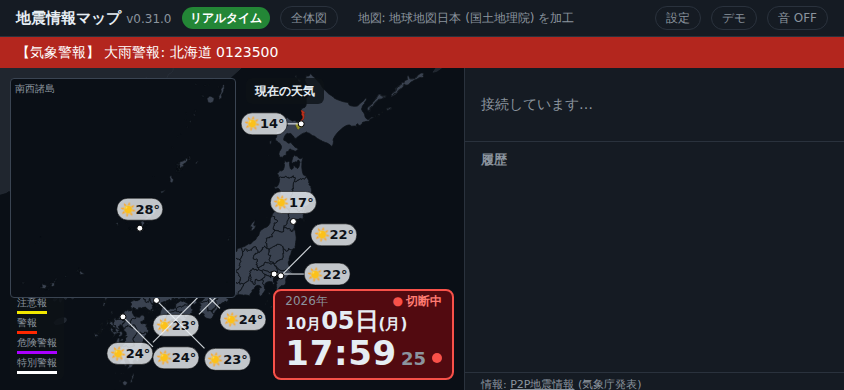
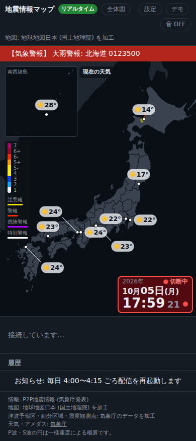
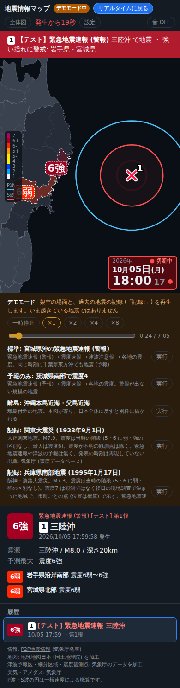

eq-webservice ドキュメント
画面部品 仕様書 (現状分析)
画面に出ているものを「部品」として洗い出し、将来、通常版とモバイル版で並べ方を変えられるようにするための土台となる資料です。 今回は現状の分析が中心で、実装の変更はしていません。最後の章に、部品化の設計の叩き台 (提案) を置いています。
関連: データ源の調査メモ — 観測点震度・台風・レーダー・既存データの利用条件 (要確認を明記)。
各記述の確からしさを 確 (コードを読み、実測でも確認) / 中 (コードからの読み取り。全状態の実機確認はしていない) / 要 (推測を含む・未確認) で示します。まとめは第 12 章。
1要旨
分かったこと
- 画面は 上部バー / 帯 (EEW・津波・警報) / 地図 + 地図の上の重ね物 / 右パネル の 4 領域で、部品は約 — 個 (第 4 章)。
- PC の並びは CSS grid で素直だが、地図の上の重ね物は px の直書きで互いに依存している (南西諸島の別枠の寸法が、案内・カウントダウン・凡例の位置に手計算で入っている)。
- 表示の出し分けは状態 (平時 / EEW / 地震情報 / 津波 / 揺れの報告 / 再生 / デモ) の組み合わせで決まる。条件は複数のファイルに散っている (第 6 章)。
- モバイル対応は 幅 800px の 1 本のブレークポイントと高さの 2 段。横向きスマホ (844×390) では別枠と凡例が重なる (実測)。
- 配信 (native) は別実装 (Rust・1280×720 固定) で、座標や文言を二重に持つ。
部品化の前にほどくべきこと (第 11 章)
- 重ね物の位置の手計算を、隅ごとのスタックなど宣言的な置き方に
- 描画関数が
$("#id")に直接書く作りを、部品単位 (mount / update) に - 地図の描画と、地図の上の重ね物を別のクラスに分ける
- 札の「避け合い」を、部品の宣言 (keepOut) で
- 表示条件を、状態から決まる述語として 1 か所に
段階的な進め方の案と、先に決めておくべき論点は第 11 章。
2現状の構造
2.1 画面を描く実装は 3 つ
| 実装 | 場所 | 描き方 | 備考 |
|---|---|---|---|
| web (通常) | web/public/index.html + web/src/*.ts → dist/app.js | 静的 HTML 1 枚 + TypeScript が DOM / SVG を直接更新 (フレームワークなし) | 本書の主な対象。ビルドは esbuild で 1 ファイルにまとめる |
| web (配信用) | 同じページに ?broadcast=1 | 操作ボタン 8 個を CSS で隠し、音を自動で有効にする | 以前の配信方式 (画面の無い Chrome で開く)。現在の本番配信は native (docs/broadcast-native.md) |
| native | crates/eq-server/src/broadcast/native/ | Rust (tiny-skia) で 1280×720 の絵を直接描き、ffmpeg へ渡す | web の見た目に「寄せる」方針。web とは座標・色・文言を別々に持つ (第 10 章) |
2.2 web の層構造 確
| 層 | 主なファイル | 性質 |
|---|---|---|
| 起動・周期・受信 | main.ts (tick / onEvents / renderAll)、connection.ts、state.ts | 単一の変更可能な状態 app と、生の World / デモの World。循環参照を避けるため hooks 経由で呼び合う |
| 純粋ロジック (DOM に触らない) | groups / quakes / priority / alert / tsunami / warnings / weather / thin / cluster / labels / camera / waves / scale / personal / userquake / fade / clock / history / voice … | 28 本の *.test.ts が node --test で検証。DOM・レイアウトのテストは無い |
| DOM 描画 (部品に当たる) | view.ts (一覧・詳細・帯・モード)、chrome.ts (時計・テロップ・音)、weather-layer.ts、banner.ts、bgm.ts、personal-ui.ts (設定・カウントダウン)、demo-ui.ts | $("#id") で固定の要素を引いて innerHTML / textContent / hidden を書く。クリックなどのイベントは import した時点で付く |
| 地図 | map.ts (JapanMap・916 行)、scene.ts、map.css | SVG を自前で描く。層・カメラ・別枠・ツールチップ・画面外の矢印を 1 つのクラスが持つ |
2.3 描画のサイクル 確
tick()(main.ts) が全部品のrender*()を順に呼ぶ命令的な更新。波を描いている間はrequestAnimationFrame、それ以外は 1 秒ごとのsetTimeout(デモ再生中は 200ms)。- 無駄な書き換えは、文字列の署名 (
sig)・textContent/innerHTMLの比較で止める。部品ごとの「前回の値」は各ファイルのモジュール変数に散っている。 - 受信 (
onEvents) はrenderAll()で一覧・詳細・津波の帯・デモパネルを描き直し、そのままtick()を呼ぶ。 - 時刻は
Connection.now()(サーバ時刻との差を保持) で、デモ中はデモの時計に置き換わる。
3画面の領域と配置 確
実際に v0.31.0 をビルドして Chromium で開き、各部品の座標を測って描いた模式図です (付録 A)。下の切り替えで、PC・スマホ・横向きスマホ・native を見比べられます。箱を押すと部品の詳細が出ます。
スマホの「EEW 中」はデモ (標準の場面) を 24 秒再生した時点で、デモパネルが開いたまま (地図の下がデモの一覧で長くなっている)。native の履歴・お知らせ・出典の高さは推定です。
3.1 領域の要点
- 上部バー: 題・モード札・操作ボタン・テロップ・時計以外の状態表示。PC は 1 行 (約 37px)、スマホは折り返して 2〜3 行 (約 91px) + sticky。
- 帯: EEW・津波・警報の 3 本。通常のフローで上部バーの下に出て、出ると地図と右パネルを押し下げる。native は逆に「重ねる」。
- 地図の枠: SVG の地図 + 重ね物 (時計・凡例・別枠・案内・カウントダウン・トースト・矢印・ツールチップ) がすべて
position:absolute。 - 右パネル: 設定 / デモ / 詳細 / 履歴 / お知らせ / 出典。PC は幅 380px で縦に flex、スマホは地図の下へ縦積み。
4部品カタログ
画面に出ているものを部品として一覧にしました。行を押すと詳細が開きます。「部品化の難しさ」は、現状の作りのまま別の場所へ置く・複製する・無効にする難しさの見立てです (低 そのまま動かせる / 中 周辺に依存あり / 高 位置や寸法が他の部品と結びついている)。
| 部品 | ID / セレクタ | 領域 | 表示条件 (要約) | 難しさ | 確度 |
|---|
4.1 画面の見た目に関わらない出力 (部品化の対象外)
次のものは画面のレイアウトには出ませんが、状態に応じて動く「出力」です。部品の再定義とは別の系統として扱うのが自然です。
- 警戒音・案内音 (
sound.ts): 新しい情報・波の広がり中の 2 秒ごとの短い音・揺れの報告の控えめな音。 - BGM (
bgm.ts): 平時のみ。ボタン・曲名の部品だけ画面にある。 - 読み上げ (
voice.ts): サーバの音声 (/api/tts/…)。設定で ON/OFF。 - ブラウザ通知 (
personal-ui.ts notify()): 画面が裏にあるときだけ。
5地図 SVG の層 確
地図の中身は 1 枚の SVG で、層の順 (下から) と出す条件は次のとおりです。「別枠に複製」の列が ● の層は <use href="#map-base"> で南西諸島・小笠原の別枠に映ります (それ以外は別枠用に個別に描く)。
| 順 | 層 | 内容 | 元データ | 出す条件 | 別枠に複製 | 備考 |
|---|
6表示条件 (状態 × 部品) 中
どの状態でどの部品が出るかを、コード (main.ts calmState()、各 render*() の条件) から読み取った表です。状態は排他ではありません (たとえば EEW と津波予報は同時に出うる)。各行を指すと補足が出ます。
6.1 状態の定義
6.2 判定の中心 (calmState)
// web/src/quakes.ts
quiet = !app.demo && !feeling && !tsunami && settled // settled: 優先する地震・EEW・波がすべて終わっている
calm = quiet && !app.selectedKey // 過去の地震を選んでいない
- calm のときだけ: 気象警報・注意報の塗りと帯、天気の札と案内、アメダスの雨、「警報・注意報」ボタンを隠す側の判断。
- quiet のときだけ: お知らせ (バナー) と BGM。
- この 2 つ以外 (EEW の帯・津波の帯・凡例の行・カウントダウンなど) は、各
render*()が自分で条件を持つ。
visible(state) として 1 か所に集めると、レイアウト側は「出るか出ないか」だけを見ればよくなる。7配置の結合 (暗黙の依存) 確
部品の並べ方を変えるときに壊れる場所の一覧です。いずれも「ある部品の寸法を、別の部品の位置に手で写している」形になっています。
7.1 実測のスクリーンショット





8レスポンシブの現状 確
| 条件 | 対象 | 変わること | 場所 |
|---|
8.1 観察
- 幅の境目は 800px の 1 本。それ以外は高さ (520px / 440px 以下) の補正で、どちらも
min-width:801pxと組になっている。向き (orientation) は使っていない。 - スマホはページ全体がスクロールする作りに切り替わり (
html,body{height:auto})、PC は viewport に固定して内側で流す。ここが「2 つのモード」の本質的な違い。 - 幅 801px 以上の横向きスマホ (実測は 844×390) は PC の配置のままで、別枠と凡例が重なる (図 7-3)。
- 幅 800px ちょうどのタブレット縦 (800×1000) は「スマホ」側に入る。専用の並びは無い。
- 部品の大きさ (別枠の高さ・時計の文字・凡例の行高) は、@media の中で個別に上書きされている。部品側が「小さい版の寸法」を持つ形にはなっていない。
9データ・通信・永続化 確
| 種類 | パス | いつ | 受け取る側 | 反映先の部品 |
|---|
サーバ側 (crates/eq-server) は P2P地震情報・Wolfx の WebSocket と気象庁のデータを受け、/ws と上の /api/* で配る。静的ファイル (dist/) も同じサーバが配信する (ServeDir)。
10native (配信) との対応 中
配信の画面は Rust で別に描かれています。部品の考え方を native まで広げるかどうかで設計が変わるため、差を表にしました。座標は draw.rs / frame.rs / panel.rs / notice.rs / chip.rs / banner.rs の定数から読んだものです。
| 項目 | web | native | 備考 |
|---|
11部品化への論点と設計の叩き台 提案・未決
ここから先は分析に基づく提案で、決定事項ではありません。今すぐ実装する話ではない、という前提で、先に決めておくとよいことと、小さく安全に進める順序の案をまとめました。
11.1 現状から見た障壁 確
11.2 部品の契約 (案) 提案
部品を「自分で DOM を作り、状態から表示を決め、大きさと優先度を宣言する」ものに揃える案です。いまの $("#id") への直書きを置き換える狙い。
11.3 レイアウトプロファイル (案) 提案
並べ方を宣言として持ち、プロファイル (desktop / mobile / 必要なら landscape) を切り替える案です。重ね物は「隅のスタック」で置くので、第 7 章の C1〜C4 の手計算は不要になります。
11.4 進め方の案 (小さく安全な順) 提案
11.5 先に決めておきたい論点 要相談
11.5b 設計上の追加論点 (レビューで追加) 提案
11.6 参照したい画面 (要望): JDQ 8 枚のスクリーンショットから / JQuake 11 枚のスクリーンショットから
レイアウトの参考として、YouTube の JDQ と JQuake のチャンネルの画面を尊重したい (特に JDQ)、という要望をいただいています。JDQ は共有いただいた 8 枚のスクリーンショット (通常時、EEW 予報、EEW 警報 + 震度速報、EEW 最終報 + 震度速報、地震情報 (確定)、2026/04/20 の EEW 警報と津波予報の発表直後 3 枚) から要素を読み取りました。警報 (赤)・津波予報・揺れの報告などほかの場面の見た目は未確認です。JQuake も共有いただいたスクリーンショット (通常時 2 枚 + EEW 予報から警報への 4 枚 + 津波警報の発表直後と 4 分後 2 枚 + 能登半島地震 3 枚 (EEW 3 件同時・日本海側の津波警報・大津波警報)) から読み取りました (リポジトリには、南西諸島の別枠を JQuake のように見せたいという記述もあります: docs/nansei-inset.md)。
参考: JDQ のリプレイ動画の例 (YouTube)。この調査では動画を再生・取得できていないため、内容は未分析です (動きのある場面は、いただいたスクリーンショットから読み取っています)。
画像そのものはリポジトリに入れていません (他者の配信画面のため)。ライブカメラ枠 (水槽など) は、ご意向のとおり対象外です。
JDQ の画面の構成
JDQ の要素と、いまの部品との対応
| JDQ の要素 | 位置 | いまの対応 | ギャップ | 確度 |
|---|
設計への含意
JQuake の画面の構成 (所感: 「今の私達のに近いが、右上が細かい表示」)
JQuake の要素と、いまの部品との対応
| JQuake の要素 | 位置 | いまの対応 | ギャップ | 確度 |
|---|
JQuake から見た設計への含意
次に確認したい場面 (参照画面の探索のお願い)
参照画面から「必要なパーツ」を探していただいた結果、EEW → 震度速報 → 地震情報 → 平時への戻り、津波予報 (JDQ は発表直後、JQuake は 3 等級)、EEW が複数同時 (JQuake) までは確認できました。JDQ の津波の沿岸表示・注意報のみの時間帯・解除、JDQ の複数同時、気象警報パネルの別の場面、離島・遠地の地震は、取得できた映像の範囲外のため未確認です (下は設計に効く順の元のリスト)。
この対応表の確度は、少数の画像からの読み取りなので、データ源の有無 (強震モニタ系・雨雲レーダー) は「要」としています。JDQ・JQuake とも data.js の window.JDQ / window.JQUAKE に同じ形で書いてあります。ほかの参照画面も同じ書式で足せます。
12確度: 言えること / まだ分からないこと
確 自信を持って言えること
中 読み取りだが、変わりうること
要 まだ調べていないこと (調べると結論が変わるかもしれない)
13レビュー記録 (Fable による不足の確認)
ドラフトを Fable に渡し、コードと突き合わせて「欠けている部品・状態」「誤りや根拠不足」「native の対応表」「設計上の抜け」を確認してもらいました (読み取りのみ。ファイルは変更していません)。指摘の主な内容と、この版での扱いは次のとおりです。
| 区分 | 指摘 | 扱い |
|---|---|---|
| 欠落 | 地図の操作 (パン・ズーム・地点選択)、押せる震央の印、「のちに判明する震源」、SVG の標準ツールチップが部品に無い | カタログへ追加 (map-interaction / epicenter / svg-title) |
| 欠落 | 詳細は 3 通りでなく 6 通り、履歴の行は 3 種、各部品の状態 (arrived・running・waiting など) | 詳細・履歴の記述を修正。細かい状態の網羅は未了 (今後の課題) |
| 欠落 | 「履歴再生」に 2 つの仕組み (demo.history と selectedKey) がある | 状態の定義と確度の章に明記 |
| 誤り | 天気の札の案内は native でも別枠の「右」(y が違う) | 修正 |
| 誤り | 小笠原の別枠は「作らないと決定」でなく「先送り」 | 修正 |
| 誤り | 表示条件: カウントダウンは履歴再生中も出る / EEW の帯は地震情報の間も 3 分残る / テロップは平時でも一時的に消える | 3 行を修正 (確度「中」の表で誤りが見つかったので、同種の誤りが残りうると注記) |
| 誤り | 別枠を隠す条件、CSS 変数の数 (13→14)、$("#…") の件数の数え方、時計の接続状態 (web 3 / native 2)、C3 の原因の書き方 | 修正 |
| native | 表に無い要素: 寄り、EEW の見出し札・予測最大震度札、早送り、hindsight。「要確認」は解消 | 表へ追加・確認済みに更新 |
| 設計 | z-index・pointer-events・DOM 実測への依存・副作用・UiState・起動順・配信のプロファイル化・a11y・テスト・性能など 14 項目 | 11.5b に全件を記載。契約 (11.2) に z / interactive / a11y / states を追加、手順に「派生状態を 1 回計算」を追加 |
このレビューも読み取りに基づくもので、全コードの通読ではありません。確認した主張 (寸法・条件・座標など約 20 件) の多くは正しいと確認されています。
A付録 A: 実測値
Chromium (Playwright) で web/dist を開いて getBoundingClientRect() を取った値です (単位 px。y はページ上端から)。/api/warnings・/api/weather・/api/banners・/api/telop は固定の値で差し替え、WebSocket は接続できないので時計は「切断中」の見た目です。EEW 中はデモ「標準」を 24 秒再生した時点。
| セレクタ | 部品 | x | y | 幅 | 高さ | position |
|---|
B付録 B: 実測の再現手順
再配置の前後で座標を比べる土台として、測定のスクリプトを docs/ui-spec/tools/measure.mjs に置きました (Node 22 + Playwright が必要。リポジトリの依存には追加していません)。
cd web && npm ci && npm run build # web/dist を作る
(cd dist && python3 -m http.server 8099 &) # 静的に配る (API は無くてよい)
node docs/ui-spec/tools/measure.mjs # 実測して docs/ui-spec/measured.js と img/ を作り直すスクリプトは API を固定値で差し替える (気象警報・天気・お知らせ・テロップ)。デモの EEW 中は 24 秒待ってから測る。出力先は --out で変えられる (既定は docs/ui-spec)。
C付録 C: web/src の主なファイル対応
| ファイル | 担当する部品・役割 |
|---|---|
main.ts | 起動、tick()、受信、気象警報の帯と塗り、トースト、カウントダウン以外のほぼ全体の司令塔 |
view.ts | 履歴 (list)、詳細 (detail)、EEW の帯、津波の帯、モード札、地図の塗り分けの指示 |
chrome.ts | 時計、接続状態、テロップ、音ボタン、音の案内 |
map.ts / map.css | JapanMap: 全層、カメラ、別枠、ツールチップ、画面外の矢印、札の避け合い |
scene.ts | 震央の印、P波・S波の円、カメラの目標 (波の経過時間の表示も) |
weather-layer.ts / weather.ts / thin.ts | 天気の札・案内・雨の点、札の置き場所の探索 |
banner.ts | お知らせ (平時のバナー) |
bgm.ts | BGM のボタン・曲名・音量 |
personal-ui.ts / personal.ts | 設定パネル、ブラウザ通知、カウントダウン、設定の保存 |
demo-ui.ts / demo.ts / history.ts | デモ・履歴再生のパネルと再生計画 |
broadcast.ts | ?broadcast=1 の処理 (音の出力先・mixer への通知) |
state.ts / dom.ts | 共有状態 app と $()、地図のインスタンス (map) |